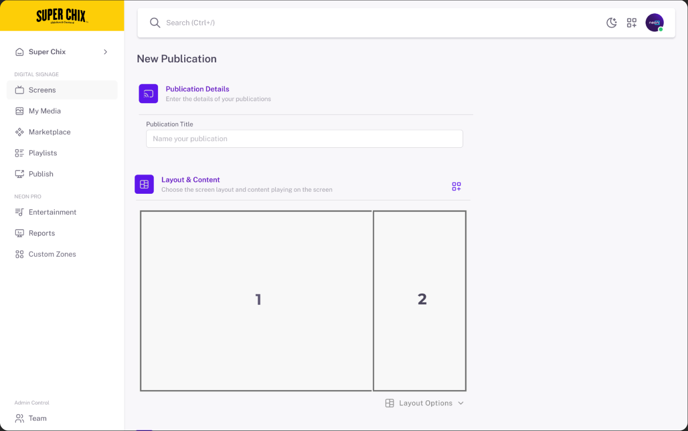

Neon Screens
UI/UX Designer
A web app for digital signage. Businesses, organizations and events use it to create and manage their displays: customizing content, choosing hardware and scheduling what plays where.

Deliverables
Simplified dashboard management
We redesigned the dashboard to streamline the tasks users do most. After extensive research and app audits, we focused on making it easier to add screens, locations and groups.
We also introduced new features for creating playlists and publications, keeping the process intuitive and efficient. Complex tasks became a simpler interface for managing digital signage content.

Streamlined media management
My Media lets users manage and organize their files. The aim was to make it easy to sort content into folders and playlists, so organizing and finding content for a display is quick. The redesign improved user workflow and efficiency.


Marketplace
We created a marketplace where users can search for and create widgets tailored to their business, a flexible, customizable way to add relevant, engaging content to their displays.
Design system
By building a design system from the start, we could ensure consistency with confidence and further bridge the gap between design and development.